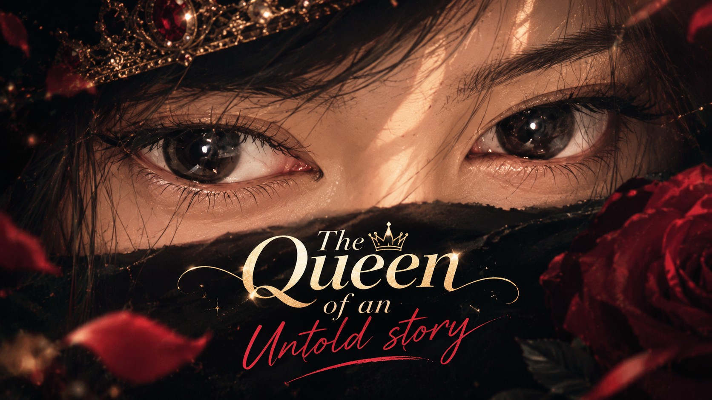
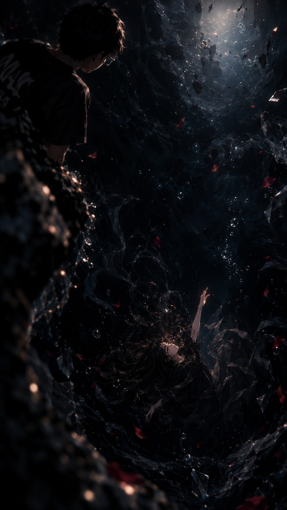
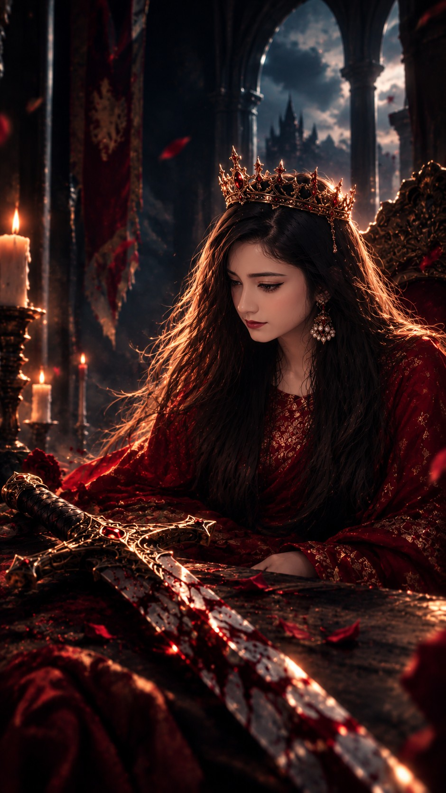
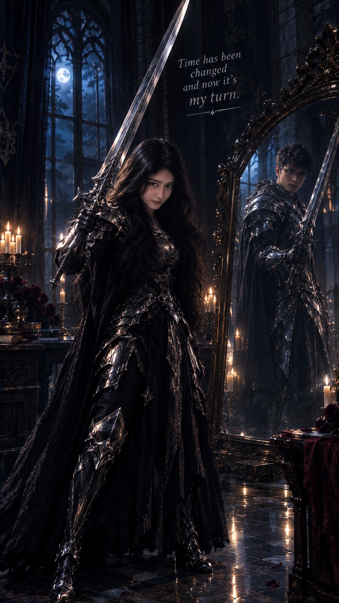
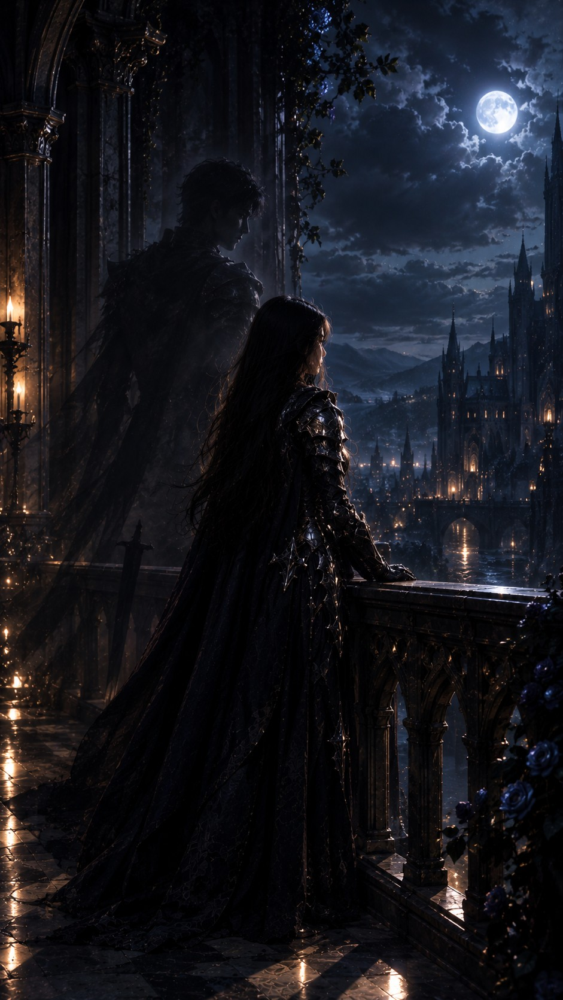

Hey Queen, Happy Birthday to You! 👑🖤
একটা গল্প, সাতটা অধ্যায়, শুধু তোমার জন্য।

নিচে নামো, আস্তে আস্তে। প্রতিটা ছবি ছুঁয়ে দিলে বড় হয়ে খুলবে।
The Void
যেখানে সব নীরব ছিল

সেই void-এ ডুবে থাকা মেয়েটাকে এখন দেখে মনে হচ্ছে, সে ধীরে ধীরে আবার হাঁটতে শিখছে। বেশ ভালো লাগে যখন ভাবি, হ্যাঁ, অন্তত এখন সে নিজে নিজেই survive করতে জানে।
The Crown & the Sword
যা পেছনে ফেলে এলে

সেই পুরোনো sword-টার দিকে তাকিয়ে থাকার আর কোনো প্রয়োজন নেই। কারণ এখন তুমি সেই মানুষ, যে নিজের শক্তিতে পুরো verse-টাকেই conquer করতে পারে।
The Mirror
যে তুমি এখন নিজের হাতে লড়ো

আর তোমার শরীরে armor, হাতে sword—সবকিছু দেখে সত্যিই ভালো লাগে। জানো, তোমাকে দেখে মনে হয়, তুমি এখন নিজের combat techniques-গুলোও শিখে গেছ।
And yeah, Solace never dies, but he can fade away.
The Moon
দূরত্ব থাকলেও, একই আকাশ

দেখো, সেই চাঁদটা—যেটা তুমি আর আমি দুজনেই দেখি। হয়তো আমাদের মাঝে দূরত্ব আছে, কিন্তু আমি আছি তোমার সঙ্গে, ঠিক তোমার ছায়ার মতোই। আর একটা কথা সব সময় মনে রেখো—আমি নিজেকে আরও better করার কাজেই ব্যস্ত আছি। সময়ই একদিন সবকিছুর উত্তর দেবে।
খুব শিগগিরই হয়তো এই পৃথিবী আমার নাম জানবে—একজন Villain হিসেবে, কিংবা এমন একজন মানুষ হিসেবে, যার পথটা ছিল ভুলে ভরা, অগোছালো আর muddy। আবার হয়তো অল্প কিছু মানুষ আমাকে একজন ভালো মানুষ হিসেবেও চিনবে। But honestly, after such a long time, I finally feel that maybe my decisions weren’t wrong after all. হয়তো আমার thoughts-গুলোও পুরোপুরি ভুল ছিল না।
The Fire
তোমার জেদই তোমার শক্তি
জানো, তোমাকে দেখে মনে হচ্ছে তুমি নিজেকে আগের চেয়ে অনেক বেশি strong করে তুলেছ। আর শোনো, নিজের জেদ আর রাগকে দুর্বলতা হিসেবে দেখবে না। সেগুলোকে নিজের power হিসেবে ব্যবহার করতে শেখো। তবে এমনভাবে, যেন সেই শক্তি তোমাকে ধ্বংস না করে, বরং তোমাকে আরও উঁচুতে নিয়ে যায়।
“The Untold Crown Never Grows Old.” 👑
এই কথাটা আমি প্রায়ই বারবার পড়ি—again and again. It’s no longer just a line for me; it has become a part of who I am. মনে হয়, কথাগুলো ধীরে ধীরে আমার রক্তের সঙ্গে মিশে গেছে।
Violence is temporary, but never lose your hope.
The Birthday
আজ শুধু তোমার দিন
Insha Allah, তোমার সামনের দিনগুলোতে তোমার জন্য আরও সুন্দর কিছু অপেক্ষা করছে। হয়তো আজ তুমি যতটা কল্পনা করতে পারছ, তার চেয়েও অনেক বড় কোনো reward তোমার জন্য লেখা আছে।
নিজের ওপর বিশ্বাস রেখো, নিজের journey-টাকে সম্মান করো, আর কখনো ভুলে যেয়ো না—তুমি কতটা পথ পেরিয়ে আজকের এই মানুষটা হয়ে উঠেছ।
একটা wish করো, তারপর মোমবাতিগুলো নিভিয়ে দাও 🕯️
Once Again, Happy Birthday, Queen. 🖤👑
আজকের দিনটা মন খুলে enjoy করো। তোমার জীবনের এই নতুন chapter-টা হোক আরও শক্তিশালী, আরও সুন্দর, আর তোমার নিজের গল্পের মতোই unforgettable.
Stay strong. Keep growing. And never let your crown fall.
একটা ছোট কথা: আমার exam চলছে, তাই এই web-টা বানানোর জন্য খুব বেশি সময় দিতে পারিনি। পুরোটা বানাতে সময় লেগেছে মাত্র ৯ ঘণ্টা।
আর হ্যাঁ, এটা একবারে হয়নি। চার বার চেষ্টা করার পর, অবশেষে চতুর্থ বারে এই web-টা মনের মতো হয়েছে। কম সময়ে বানানো হলেও, প্রতিটা লাইন মন থেকে লেখা।